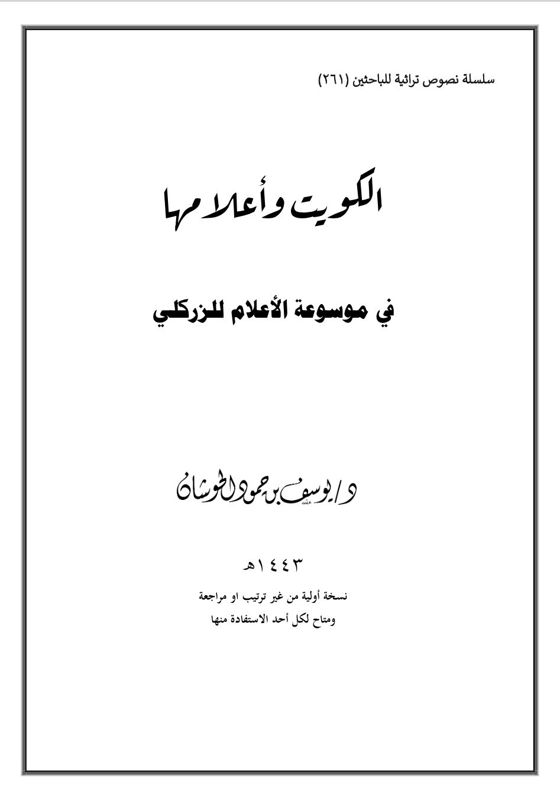
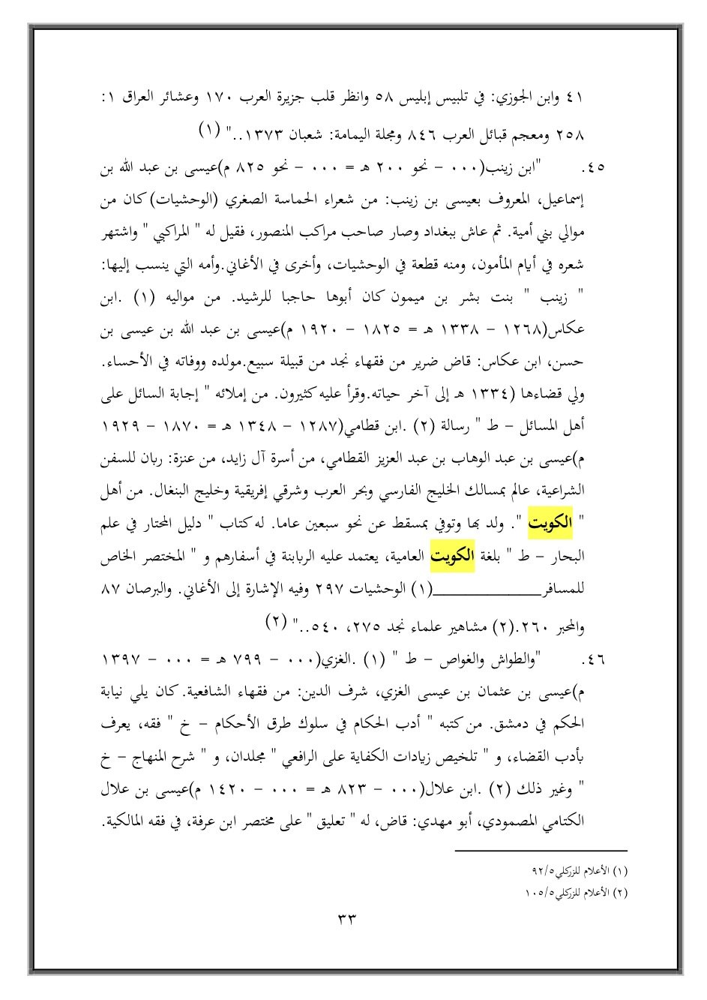

1443 AH · Book pages, Dr Yousef bin Mahmoud Al-Hawshan, Al-Kuwait wa Rijaluha fi Mawsu'at Al-Zirikli, Nusus Turathiya lil-Bahithin no. 261, 1443 AH
Ibn Qatami in Al-Zirikli’s Al-A'lam: Eissa bin Abdulwahab bin Abdulaziz Al-Qatami
What it is
Entry 45 on page 33 reproduces Al-Zirikli’s Al-A'lam: «Ibn Qatami (1287 to 1348 AH, 1870 to 1929): Eissa bin Abdulwahab bin Abdulaziz Al-Qatami, of the Al Zayed family, of Anaza; a captain of sailing ships, learned in the sea routes of the Gulf, the Arabian Sea, East Africa and the Bay of Bengal. From the people of Kuwait; born there, and died in Muscat at about seventy. He wrote Dalil Al-Muhtar fi Ilm Al-Bihar, printed, in the colloquial language of Kuwait, on which captains rely in their voyages, and Al-Mukhtasar Al-Khas lil-Musafir wal-Tawwash wal-Ghawwas, printed». The footnote cites Al-A'lam, volume 5, page 105.
Why it matters
Al-Zirikli gives Eissa’s full name back to his grandfather Abdulaziz and places the family in Al Zayed of Anaza.
Page copies


Others named
Sources
Dr Yousef bin Mahmoud Al-Hawshan, Al-Kuwait wa Rijaluha fi Mawsu'at Al-Zirikli, 1443 AH, page 33, entry 45, citing Al-Zirikli, Al-A'lam, 5/105
How this text was made: The title page calls this a first version, not yet reviewed. It reproduces Al-Zirikli; the page from Al-A'lam itself has not been photographed.
Open in the interactive site